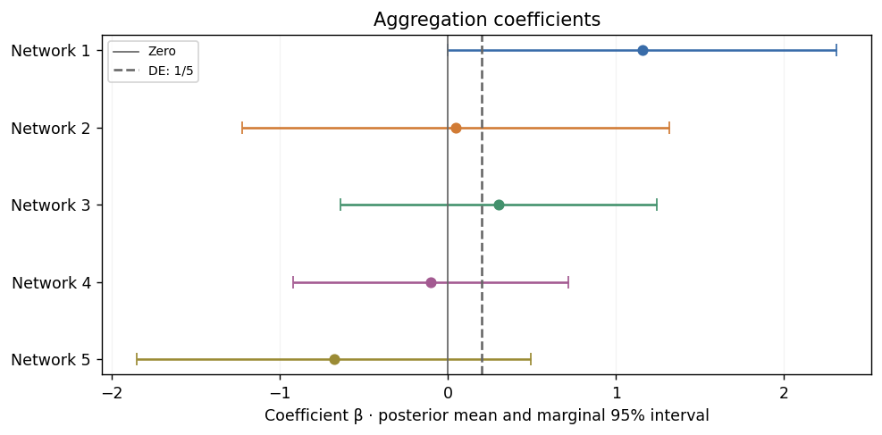
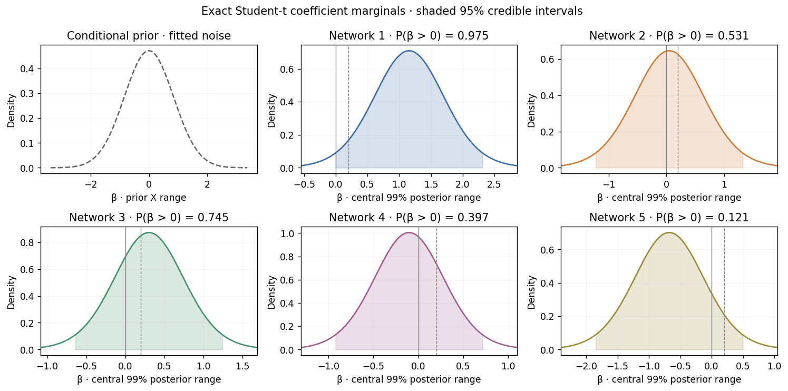
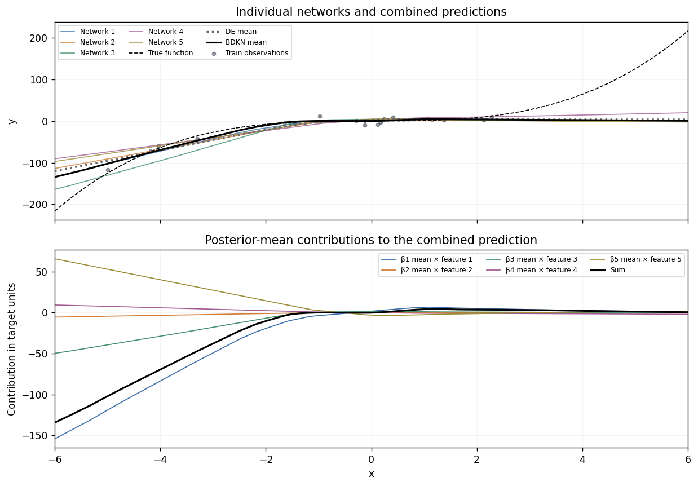
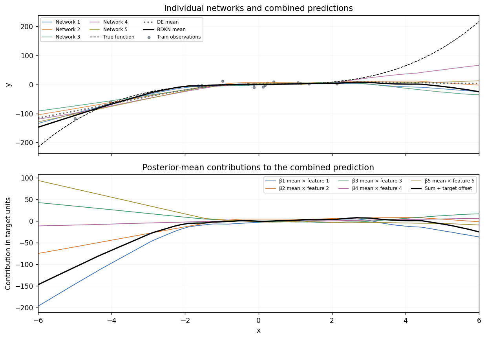
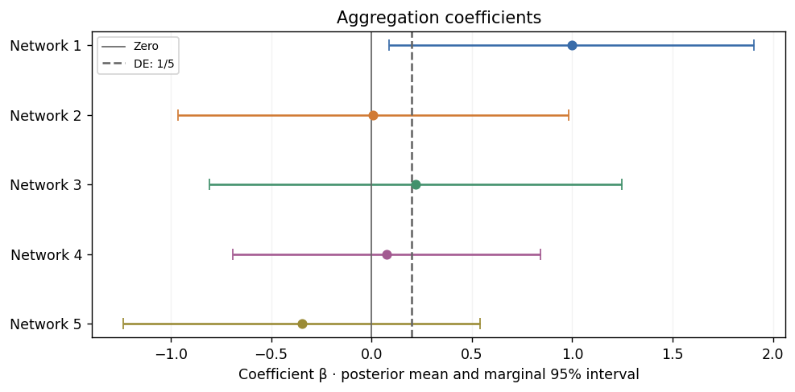
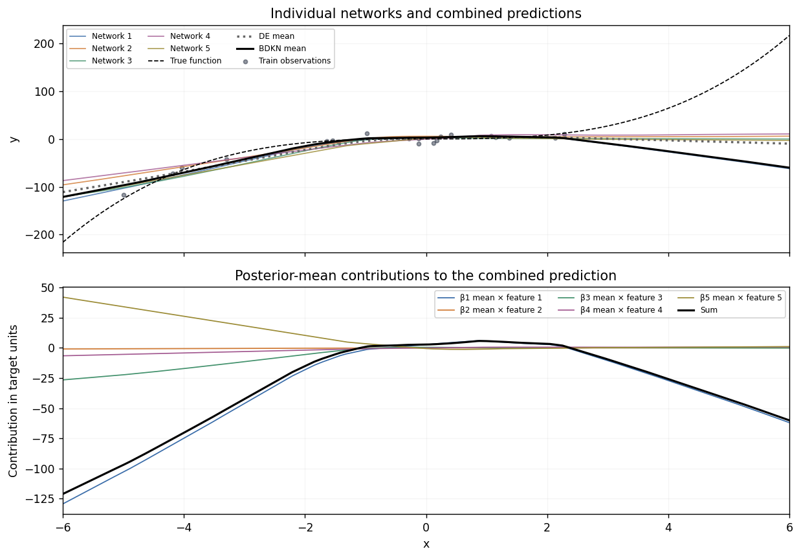

Regression comparison
Download resultsAggregation weights
Coefficients can be negative and need not sum to one. Intervals describe coefficient uncertainty; the dashed reference is DE’s fixed 1/H weight.
BDKN


Each density panel uses its own X range for readability; coefficient intervals above share a common axis. Prior reference conditions on fitted noise. Contribution shares use held-out inputs; test targets are used only for scoring.
| Network | β mean | 95% low | 95% high | P(β > 0) | Contribution share | Test RMSE | Test NLL |
|---|---|---|---|---|---|---|---|
| 1 | 1.64634 | 0.98409 | 2.30859 | 0.99998 | 0.48029 | 62.55445 | 11.62638 |
| 2 | 0.45083 | -0.98652 | 1.88817 | 0.73980 | 0.12782 | 62.95527 | 16.43550 |
| 3 | -0.38688 | -1.78622 | 1.01246 | 0.28528 | 0.12531 | 62.36362 | 10.38803 |
| 4 | 0.16634 | -0.64366 | 0.97633 | 0.66352 | 0.05730 | 60.95023 | 43.23640 |
| 5 | -0.67137 | -2.07639 | 0.73364 | 0.16539 | 0.20927 | 62.64652 | 21.54277 |
Functional repulsion · BDKN



Each density panel uses its own X range for readability; coefficient intervals above share a common axis. Prior reference conditions on fitted noise. Contribution shares use held-out inputs; test targets are used only for scoring.
| Network | β mean | 95% low | 95% high | P(β > 0) | Contribution share | Test RMSE | Test NLL |
|---|---|---|---|---|---|---|---|
| 1 | 1.15540 | -0.00207 | 2.31287 | 0.97481 | 0.51520 | 60.21432 | 12.15315 |
| 2 | 0.04800 | -1.22392 | 1.31992 | 0.53098 | 0.01958 | 62.19117 | 18.48603 |
| 3 | 0.30325 | -0.63808 | 1.24459 | 0.74536 | 0.16907 | 60.54447 | 8.95522 |
| 4 | -0.10323 | -0.92079 | 0.71434 | 0.39748 | 0.04671 | 57.58102 | 31.89310 |
| 5 | -0.67702 | -1.84815 | 0.49412 | 0.12097 | 0.24944 | 64.54062 | 22.75089 |
Weight repulsion · BDKN



Each density panel uses its own X range for readability; coefficient intervals above share a common axis. Prior reference conditions on fitted noise. Contribution shares use held-out inputs; test targets are used only for scoring.
| Network | β mean | 95% low | 95% high | P(β > 0) | Contribution share | Test RMSE | Test NLL |
|---|---|---|---|---|---|---|---|
| 1 | 1.46716 | 0.67250 | 2.26182 | 0.99950 | 0.41576 | 67.50417 | 13.29159 |
| 2 | 0.71836 | -0.13537 | 1.57209 | 0.95273 | 0.19412 | 60.79188 | 13.90838 |
| 3 | -0.46500 | -1.67144 | 0.74144 | 0.21543 | 0.12782 | 74.63960 | 14.51469 |
| 4 | 0.09549 | -1.15655 | 1.34752 | 0.56240 | 0.03947 | 41.40064 | 14.44568 |
| 5 | -0.72785 | -2.08972 | 0.63402 | 0.13907 | 0.22282 | 57.70837 | 20.03158 |
First-order repulsion · BDKN


Each density panel uses its own X range for readability; coefficient intervals above share a common axis. Prior reference conditions on fitted noise. Contribution shares use held-out inputs; test targets are used only for scoring.
| Network | β mean | 95% low | 95% high | P(β > 0) | Contribution share | Test RMSE | Test NLL |
|---|---|---|---|---|---|---|---|
| 1 | 0.99758 | 0.08865 | 1.90651 | 0.98347 | 0.67528 | 80.42538 | 18.37787 |
| 2 | 0.00902 | -0.96394 | 0.98198 | 0.50762 | 0.00379 | 61.77443 | 16.70867 |
| 3 | 0.21939 | -0.80898 | 1.24776 | 0.66945 | 0.10834 | 61.94536 | 9.30698 |
| 4 | 0.07481 | -0.69202 | 0.84164 | 0.57960 | 0.03345 | 61.00487 | 24.46363 |
| 5 | -0.34669 | -1.23518 | 0.54181 | 0.21263 | 0.17914 | 63.26686 | 23.82520 |